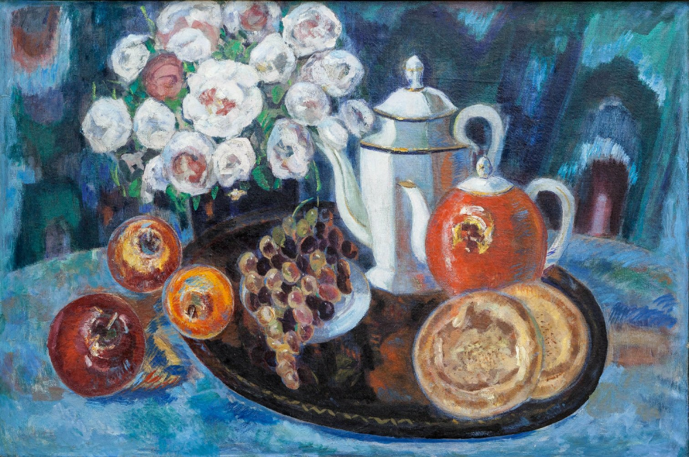

Айша Галимбаева

Мәліметтер:
т. 1992, Қазақстан, Алматы

Айша Галимбаева, Түнгі Наблюдатель, 2020, 243 см x 183 см, Май, Акрил на холсте.
Айша Галимбаева: Өнер арқылы Идентичносты Зерттеу
Айша Галимбаева қазақ мәдениетінен шабыт алып, өз өнерінде идентичность және принадлежность тақырыптарын көрсетеді. Оның жарқын түстер мен күрделі өрнектерді пайдалануы, мәдени тамырлары мен заманауи тәжірибелері туралы әңгімелейді.
Галимбаева жиі дәстүрлі мотивтерді заманауи композицияларға кірістіріп, ескі мен жаңаның ерекше үйлесімін жасайды, бұл көрермендерге әсер етеді.